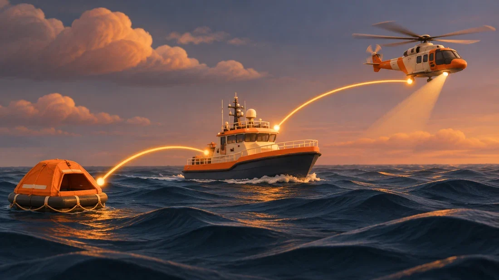

Timmen
Fem togs upp efter nödlarm i Skagerrak

Fem personer lämnade ett danskt fiskefartyg i norska vatten på måndagskvällen. De tog sig över i en räddningsflotte och plockades upp av ett annat fartyg, uppgav den norska räddningsledaren Oddgeir Andersen för VG kl. 19.35.
Räddningen skedde i flera steg. Den norska räddningscentralen meddelade kl. 19.18 att den tagit emot ett nödanrop och skickat norska och danska helikoptrar samt flera fartyg mot platsen. En dansk helikopter nådde fram kl. 19.25. När Andersen gav sin uppdatering tio minuter senare höll de fem på att vinschas upp i den danska helikoptern för transport till Danmark.
Ett fartyg tog upp de fem ur flotten. En helikopter kunde sedan föra dem vidare. Det är två olika uppgifter i samma kedja, och de behövde inte utföras av samma land. Den norska räddningscentralens samarbetsplan beskriver hur två räddningscentraler samordnar insatserna och hur helikoptrar och fartyg i grannländer kan sättas in. Planen förklarar hur resurserna kan kombineras, men visar inte vilket avtal som användes i Skagerrak den här kvällen.
Räddningscentralen uppgav inte vad som föranledde nödanropet. Källorna för den här timmen gav heller inget besked om de fem personernas tillstånd efter upphämtningen.
Källor och källvärdering. VG: Fiskefartøy sendte ut «mayday»: – Alle reddet opp. Publicerad kl. 19.19, uppdaterad 19.41. Originalrapportering med direkta besked från räddningsledaren 19.35 samt återgivning av räddningscentralens meddelande 19.18. Stark närhet till insatsen. Bekräftar upphämtningen och den pågående vinschningen men inte varifrån de vinschades, ankomst, hälsotillstånd eller larmorsak.
NTB via Aftenposten: Nødsignal fra fiskefartøy i Skagerrak. Publicerad kl. 19.25 enligt indexerad artikel. En separat redaktionell rapport med besked från samma räddningscentral stöder den tidiga insatsen och att besättningen tog sig över i en flotte. Det är inte en oberoende bekräftelse av slutskedet. Artikelns indexerade originalutdrag var läsbart, men fullsidan gick inte att hämta vid kontroll.
Hovedredningssentralen: SAR Cooperation Plan. Primärkälla för den norska räddningsorganisationen och tillgången till sjö- och flygresurser i grannländer, särskilt avsnitt 3.1 och 4.3. Planen rör organisationen, inte vad som skedde denna kväll.